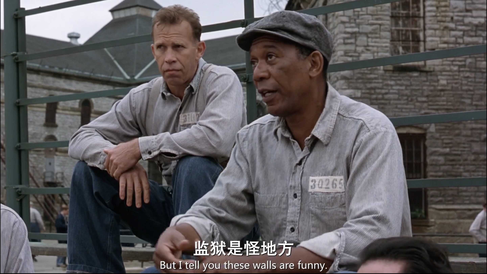
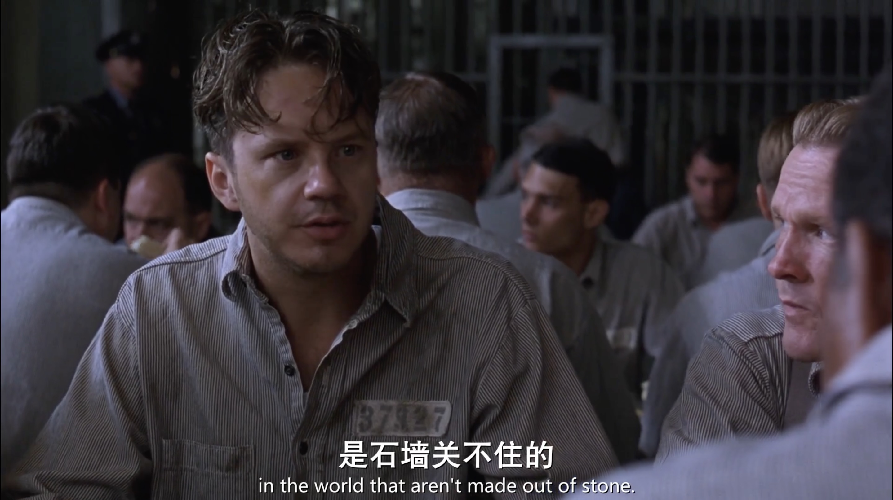
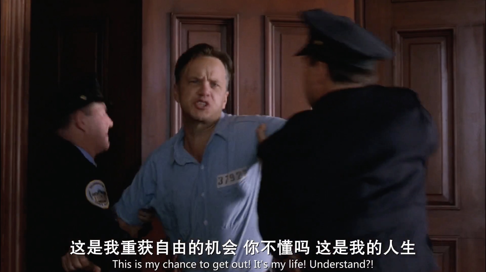

相关链接：
- 《失业第二个月干了什么》
- 《失业一个月的回顾》
这次失业的原因，以及找工作用的时间，都远超我的预期。已经三个月了……难以想象，真是一段很长的时间。
工作像一堵高墙，他囚禁你，让你失去时间、失去享受生活的自由。一开始你憎恨它，厌恶它，后来你逐渐适应它，习惯它，最终被这堵高墙驯化，离不开它。
失业三个月，我开始逐渐适应这样的失业生活，学习、分析项目、打游戏……
上个月入坑了 FMV 游戏，当时还推荐了几个好玩的。后来我继续玩了一些时间，到目前为止，最喜欢的是《完蛋，我被美女包围了2》，古风剧情的那个，游玩时长一共 12 小时，解锁 100% 进度，达成全部 60 个成就。游戏结束后，我在抖音上搜一些《完蛋2》相关的视频看，找到了女演员的账号，以及她们讲述游戏幕后的一些内容。
我最羡慕的是这些女演员，有戏拍的时候拍戏，拍出《完蛋2》这种游戏后，不但能被人喜欢，还能在直播玩这款游戏，对当时拍摄过程中的小故事娓娓道来。有些演员还能放出一些自己拍的花絮，爆料游戏背后的故事等。她们有自己的工作，会拍很多其他游戏、电视剧。要是没有戏拍，空闲了，可以在抖音上发发自拍、分享自己的生活、直播跟观众聊天，也挺有意思。我觉得她们很幸福，她们生活在自己的轨道里。
程序员是一种不一样的职业，不会有人 “喜欢” 你的工作成果，失业了，也不可能在抖音上发自拍。
FMV 的女演员也是有明星效应的，当某一个演员在某一个游戏里表现好被观众记住了，那么这个演员的其他游戏，很多玩家会跟着去，就只是为了演员而玩完整个游戏。
失业并且超过三个月找不到工作，这是我未曾想过的失败人生的剧本。不是我不能接受失败，我只是想不明白为什么会失败。我已经努力学习、工作、思考…… 我连续遇到糟糕的公司的团队，导致我工作不稳定，导致我失业，这些都不是我的错，可我却一直承受着那些事情带来的后果。
安迪为了申请州里给监狱拨款买书，坚持每周写一封信，一写就是整整 6 年，不是吗？
总有一些东西是停留在我们内心中的，高墙围不住，别人也夺不走的。
没有人会对你的人生负责。希望是自己给的，不是别人给的。
我去年辞职 找工作 的时候，给自己定下的期限是 3 个月。如果 3 个月没找到工作，就需要转变自己的职业方向，主动迎合适配市场需求。也就是降低自己的预期，考虑接受无论是薪水还是工作内容都不合适的机会。
今年，失业时间真的到达 3 个月。只不过这次不是我主动离职，我自己也没有定下期限。那么问题来了，我是否应该做一些其他考虑，转变求职期望？当 3 个月的时间点真的到来，我真的应该做出改变吗？
失业第三个月的时间是 7月20日到 8月20日，这段时间一点都没闲着，这是理所当然的。
7月20日到 7月30日之间，主要还在做一些学习总结、收尾性质的事情，比如完成 continuation 系列、写出对课程 一个月的心得，在 26号左右有一些职业方面的 思考，反思我的过往经历。
7月29日，我收到了 imToken 面试不通过的消息，当天情绪不是很好，就说 我很失败 什么的。当时已经没有其他面试了。然后就在反思我的职业生涯以来，到底做错了什么。
步入 8月份之后，就开启琢磨和尝试 Web3 项目分析计划，先是计划 每天一篇，后来因为博客排版问题想 停止，最后选用 Paragraph 平台 继续。8月1日到 8月20日这 20 天的时间里，一共写了 8个项目 的分析，再加上对计划变动的测试和调整，其实时间挺紧凑的，没有空闲。
我现在有点没心情写什么加油、努力之类的话了，先好好活着吧。